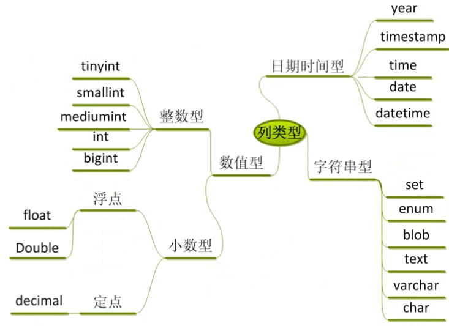

| MySql | 比较项 | MongoDB |
|---|---|---|
|
MySQL是一个关系型数据库管理系统，由瑞典MySQL AB公司开发，目前属于Oracle公司。MySQL是一种关联数据库管理系统，关联数据库将数据保存在不同的表中，而不是将所有数据放在一个大仓库内，这样就增加了速度并提高了灵活性。 优点
|
介绍 |
MongoDB 是由C++语言编写的，是一个基于分布式文件存储的开源数据库系统。 在高负载的情况下，添加更多的节点，可以保证服务器性能。 MongoDB 旨在为WEB应用提供可扩展的高性能数据存储解决方案。 MongoDB 将数据存储为一个文档，数据结构由键值(key=>value)对组成。MongoDB 文档类似于 JSON 对象。字段值可以包含其他文档，数组及文档数组。 优点
|
|
基本语法： create database + 数据库名称 + [库选项] 其中，库选项是用来约束数据库的，为可选项（有默认值），共有两种，分别为：
示例：create database dishname charset utf8 如果要检查数据库列表，请使用命令： show databases |
创建数据库 |
基本语法： use DATABASE_NAME 示例：use newdb 如果要检查数据库列表，请使用命令： show dbs 注：空的数据库是不显示出来的 |
|
基本语法： create table [if not exists] + 表名(字段名称 数据类型)[表选项]; 其中，
表选项则是用来控制表的表现形式的，共有三种，分别为：
示例：
create table if not exists test.student(
name varchar(10),
age int, /* 整型不需要指定具体的长度 */
grade varchar(10) /* 最后后一行，不需要加逗号 */
)charset utf8;
|
创建数据库表 |
基本语法：db.createCollection(name，options) 在命令中，name 是要创建的集合的名称。 options是一个文档，用于指定集合的配置。 在实际应用中，mongodb是不需要创建集合。当插入一些文档时，MongoDB 会自动创建集合。 |
|
基本语法：insert [into] 表名 [(列名1, 列名2, 列名3, ...)] values (值1, 值2, 值3, ...) 对于数据的新增操作，有两种方法
|
增--数据操作 |
基本语法：db.COLLECTION_NAME.insert(document) |
|
基本语法：update + 表名 + set + 字段 = 值 + [where 条件] 示例：update test set age = 20 where name = 'guo' 在这里，建议尽量加上where条件，否则的话，操作的就是全表数据。 此外，判断更新操作是否成功，并不是看 SQL 语句是否执行成功，而是看是否有记录受到影响，即affected的数量大于1时，才是真正的更新成功。 |
改--数据操作 |
基本语法：db.COLLECTION_NAME.insert(document) |
|
基本语法：delete from + 表名 + [where 条件] 示例：delete from test where grade = '3.1' 当然，我们也可以用drop来实现删除操作，不过与delete相比，drop的威力更强，其在执行删除操作的时候，不仅会删除数据，还会删除定义并释放存储空间；而delete在执行删除操作的时候，仅会删除数据，并不会删除定义和释放存储空间。 |
删--数据操作 |
基本语法：db.COLLECTION_NAME.insert(document) |
|
查看全部 –> 基本语法：select * from + 表名 + [where 条件] 示例：select * from test 查看部分 –> 基本语法：select + 字段名称[,字段名称] + from + 表名 + [where 条件] 示例：select name,age,grade from test where age = '18' |
查--数据操作 |
基本语法：db.COLLECTION_NAME.insert(document) |
|  | 数据类型 |
基本语法：db.COLLECTION_NAME.insert(document) |
|
蠕虫复制：从已有的数据表中获取数据，然后将数据进行新增操作，数据成倍（以指数形式）的增加 基本语法：insert into + 表名 + [()] + select + 字段列表/* + from + 表名 示例：insert into my_copy select * from my_collate_bin 蠕虫复制的意义：
|
蠕虫复制 |
基本语法：db.COLLECTION_NAME.insert(document) |
|
基本语法：select + [select 选项] + 字段列表[字段别名]/* + from + 数据源 + [where 条件] + [1] + [2] + [3]
select选项，即select对查出来的结果的处理方式
字段别名，即当数据进行查询的时候，有时候字段的名字并不一定满足需求（特别地，在多表查询的时候，很可能会有同名字段），这时就需要对字段进行重命名、取别名。 基本语法：字段名 + [as] + 别名 示例：name as 姓名 数据源，即数据的来源，关系型数据库的数据源都是数据表，本质上只要保证数据类似二维表，最终就可以作为数据源。 数据源分为 3 种，分别为：单表数据源，多表数据源和查询语句 第 1 种：单表数据源 基本语法：select * from + 表名; 第 2 种：多表数据源 基本语法：select * from + 表名1,表名2...; 第 3 种：查询语句（子查询） 基本语法：select * from + (select * from + 表名) + [as] + 别名; where字句：用来判断数据和筛选数据，返回的结果为0或者1，其中0代表false，1代表true，where是唯一一个直接从磁盘获取数据的时候就开始判断的条件，从磁盘中读取一条数据，就开始进行where判断，如果判断的结果为真，则保持，反之，不保存。判断条件：
示例：select * from student where id = 2 || id = 3 || id = 5; 示例：select * from student where id in (2,3,5); 示例：select * from student where id between 2 and 5 group by子句group by子句：根据表中的某个字段进行分组，即将含有相同字段值的记录放在一组，不同的放在不同组。基本语法：group by + 字段名; 示例：select * from student group by sex; 为了方便统计数据，SQL 提供了一系列的统计函数，例如：
示例：select sex,count(*),max(age),min(age),avg(age),sum(age) from student group by sex; order by子句order by子句：根据某个字段进行升序或者降序排序，依赖校对集。基本语法：order by + 字段名 + [asc/desc] 其中，asc为升序，为默认值；desc为降序。 示例：select * from student order by age; 此外，咱们可以进行「多字段排序」，即先根据某个字段进行排序，然后在排序后的结果中，再根据某个字段进行排序。示例：select * from student order by age,grade desc; limit子句limit子句：是一种限制结果的语句，通常来限制结果的数量。基本语法：limit + [offset] + length 其中，offset为起始值；length为长度。 三种用法第 1 种：只用来限制长度（数据量）第 2 种：限制起始值，限制长度（数据量）第 3 种：主要用来实现数据的分页，目的是为用户节省时间，提高服务器的相应效率，减少资源的浪费）
|
高级查询 |
基本语法：db.COLLECTION_NAME.insert(document) |
|
基本语法：insert [into] 表名 [(列名1, 列名2, 列名3, ...)] values (值1, 值2, 值3, ...) |
增--数据操作 |
基本语法：db.COLLECTION_NAME.insert(document) |